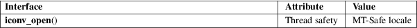

iconv_open − allocate descriptor for character set conversion
Standard C library (libc, −lc)
#include <iconv.h>
iconv_t iconv_open(const char *tocode, const char *fromcode);
The iconv_open() function allocates a conversion descriptor suitable for converting byte sequences from character encoding fromcode to character encoding tocode.
The values
permitted for fromcode and tocode and the
supported combinations are system-dependent. For the GNU C
library, the permitted values are listed by the iconv
−−list command, and all combinations of the
listed values are supported. Furthermore the GNU C library
and the GNU libiconv library support the following two
suffixes:
//TRANSLIT
When the string "//TRANSLIT" is appended to tocode, transliteration is activated. This means that when a character cannot be represented in the target character set, it can be approximated through one or several similarly looking characters.
//IGNORE
When the string "//IGNORE" is appended to tocode, characters that cannot be represented in the target character set will be silently discarded.
The resulting conversion descriptor can be used with iconv(3) any number of times. It remains valid until deallocated using iconv_close(3).
A conversion descriptor contains a conversion state. After creation using iconv_open(), the state is in the initial state. Using iconv(3) modifies the descriptor’s conversion state. To bring the state back to the initial state, use iconv(3) with NULL as inbuf argument.
On success, iconv_open() returns a freshly allocated conversion descriptor. On failure, it returns (iconv_t) −1 and sets errno to indicate the error.
The following error can occur, among others:
|
EINVAL |
The conversion from fromcode to tocode is not supported by the implementation. |
For an explanation of the terms used in this section, see attributes(7).

POSIX.1-2008.
glibc 2.1. POSIX.1-2001, SUSv2.
iconv(1), iconv(3), iconv_close(3)